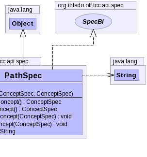

public class PathSpec extends Object implements SpecBI
|  |
| Constructor and Description |
|---|
PathSpec() |
PathSpec(ConceptSpec pathConcept,
ConceptSpec originConcept) |
| Modifier and Type | Method and Description |
|---|---|
ConceptSpec |
getOriginConcept() |
ConceptSpec |
getPathConcept() |
void |
setOriginConcept(ConceptSpec originConcept) |
void |
setPathConcept(ConceptSpec pathConcept) |
String |
toString() |
public PathSpec(ConceptSpec pathConcept, ConceptSpec originConcept)
public PathSpec()
public ConceptSpec getOriginConcept()
public void setOriginConcept(ConceptSpec originConcept)
public ConceptSpec getPathConcept()
public void setPathConcept(ConceptSpec pathConcept)
Copyright © 2013 International Health Terminology Standards Development Organisation. All rights reserved.